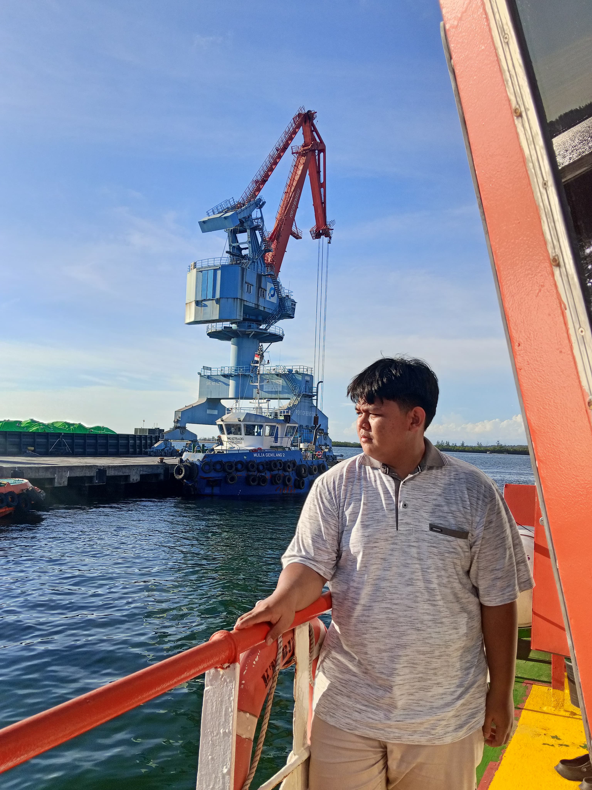
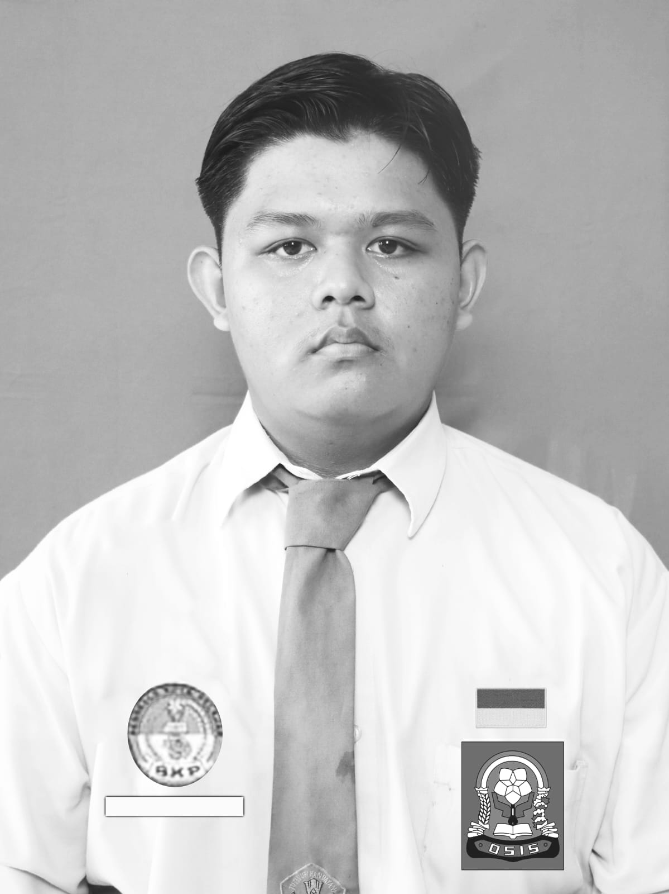
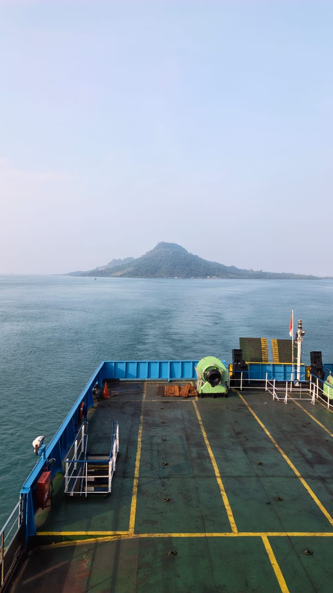
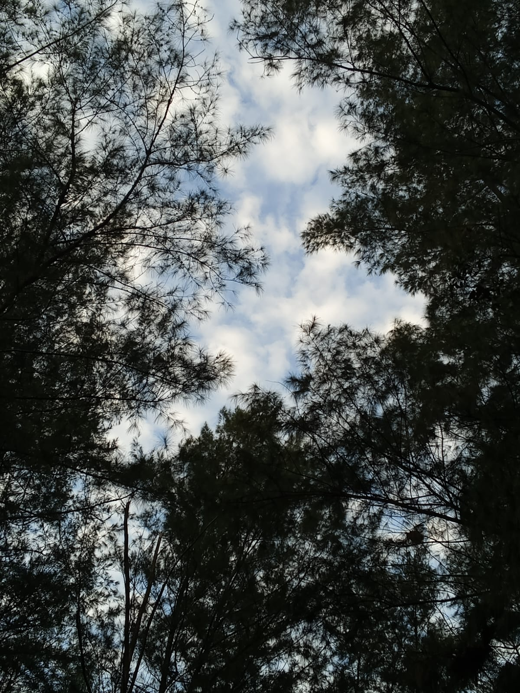
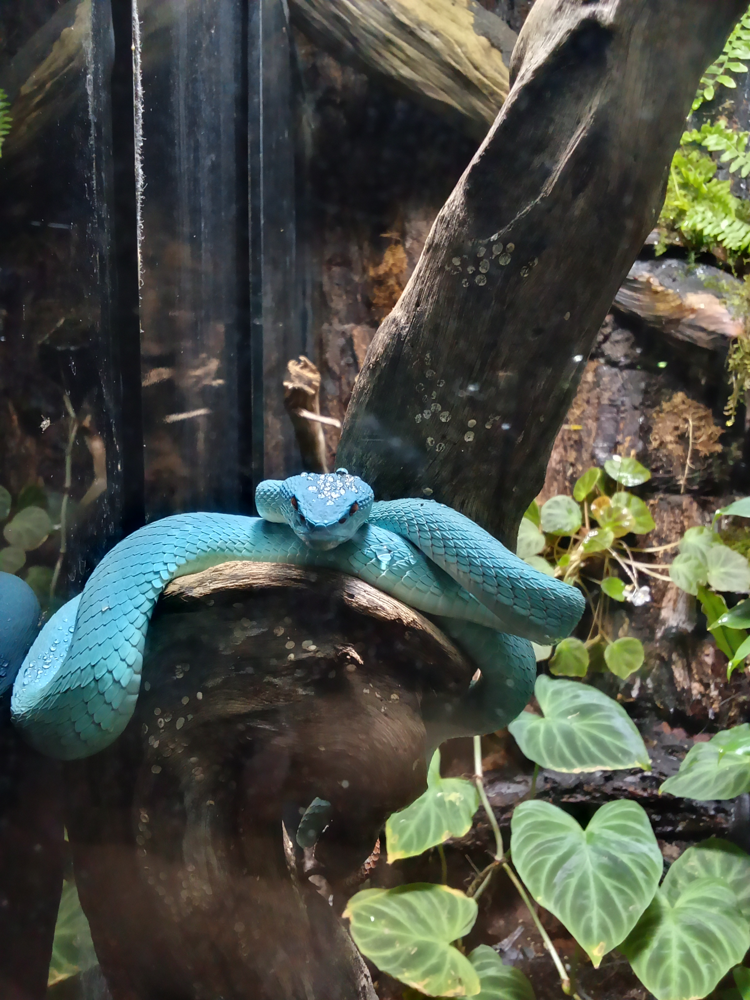
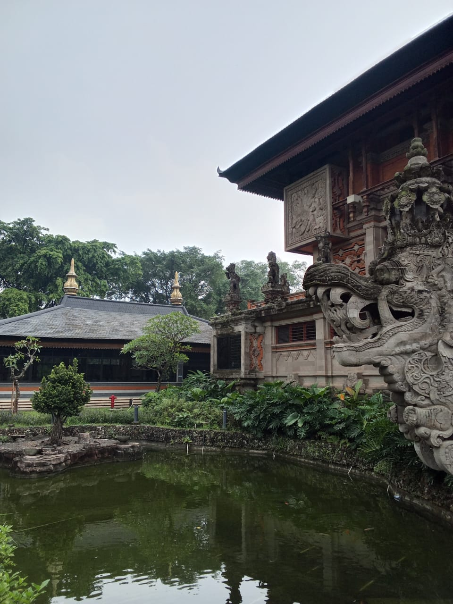

Universitas Muhammadiyah Bengkulu
Faculty of Engineering — Information Systems
Focusing on web development, computer networks, and system management.
Bengkulu City, Indonesia / Availability Status — Available for Projects
Ghaly Aryasuta Risqullah — Information Systems Student at Muhammadiyah University of Bengkulu.
"Interested in building clean and functional tech-based solutions. This page features a collection of system projects, interface designs, and new things I'm currently learning."

FIG. 01 — PORTRAIT＋01 / ABOUT

PERSONAL ARCHIVE — 01Simplicity is prerequisite for reliability.— Edsger W. Dijkstra
02 / RESUME
Faculty of Engineering — Information Systems
Focusing on web development, computer networks, and system management.
Teknik Komputer dan Jaringan (TKJ)
Studied computer hardware, network configuration, server administration, and basic troubleshooting.
IOAN (Integrated Operation Access Network)
Handled network fault troubleshooting (assurance), routine network maintenance, new service installation (provisioning), as well as network monitoring and configuration.
Department of Prevention, Socialization, and Education
Focused on direct anti-drug education and outreach programs across junior and senior high schools (SMP/SMA/SMK/Madrasah).
03 / PHOTOGRAPHY
A personal collection of nature, sea,
and sky photography captured along the way.

01↗Captured from a boat deck, looking out toward the calm ocean and distant mountains.

02↗An upward gaze capturing glimpses of the sky peeking through dense tree branches.

03↗A close-up shot of a vibrant blue viper coiled quietly around a wooden branch.

04↗Traditional Balinese architecture framed by lush greenery and calm water reflections.
04 / CONTACT
For collaborations, discussions, or simply saying hello—feel free to reach out through any of the channels below.
liyuyy31@gmail.com↗